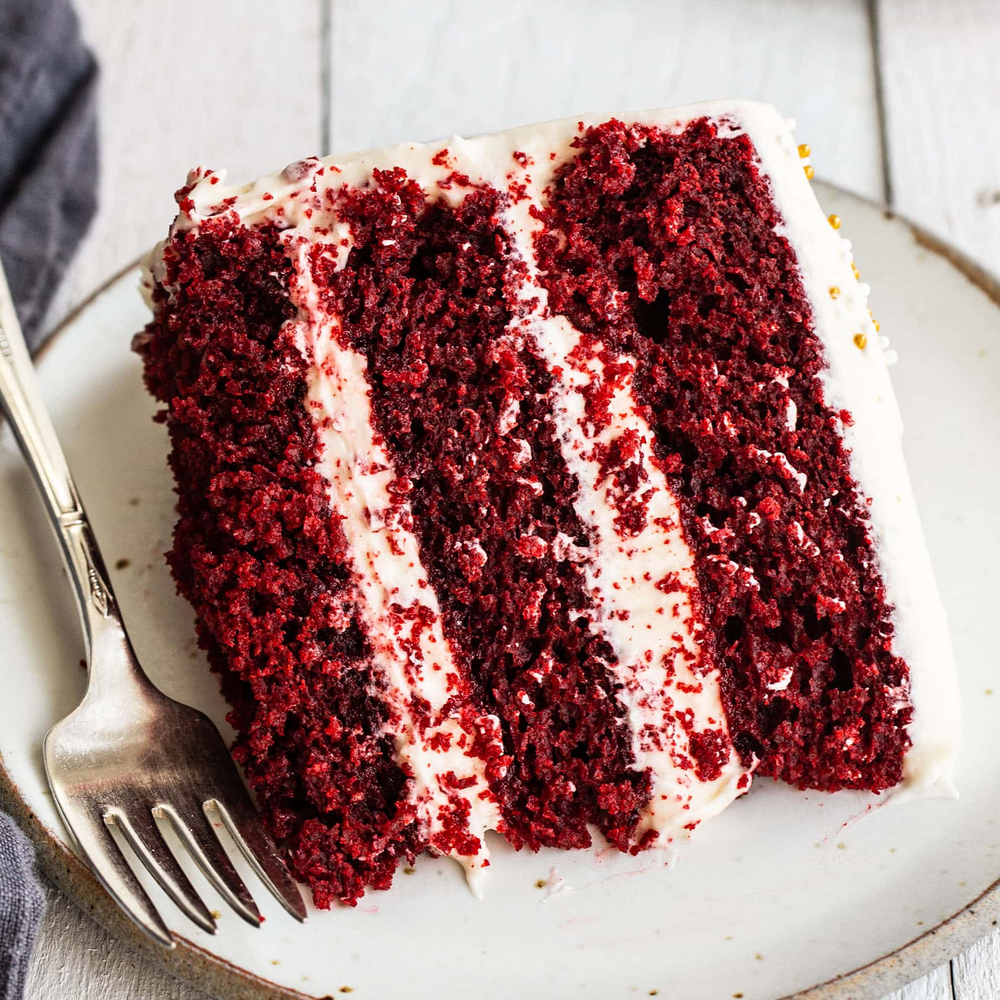

Dessert Recipes
Welcome to my collection of mouth-watering recipes! Explore the culinary delights below:
Recipe 1: Classic Chocolate Mousse
Ingredients:
- 200g dark chocolate, chopped
- 1/4 cup unsalted butter
- 1/4 cup granulated sugar
- 1 teaspoon vanilla extract
- 3 large eggs, separated
- 1 cup heavy cream
Instructions:
- Melt the dark chocolate and butter together. Let it cool slightly.
- Whisk in sugar, vanilla extract, and egg yolks into the chocolate mixture.
- In a separate bowl, beat the egg whites until stiff peaks form.
- Fold the egg whites into the chocolate mixture gently.
- In another bowl, whip the heavy cream until soft peaks form.
- Fold the whipped cream into the chocolate mixture until smooth.
- Spoon the mousse into serving glasses and refrigerate for at least 4 hours or overnight.
- Garnish with chocolate shavings or berries before serving.
- Indulge in the decadent delight of Classic Chocolate Mousse!

Recipe 2: Chocolate Chip Cookies
Ingredients:
- 1 cup unsalted butter, softened
- 1 cup granulated sugar
- 1 cup brown sugar, packed
- 2 large eggs
- 1 teaspoon vanilla extract
- 3 cups all-purpose flour
- 1 teaspoon baking soda
- 1/2 teaspoon baking powder
- 1/2 teaspoon salt
- 2 cups chocolate chips
Instructions:
- Preheat the oven to 350F (175C). Line baking sheets with parchment paper.
- In a large bowl, cream together softened butter, granulated sugar, and brown sugar until smooth.
- Beat in eggs one at a time, then stir in vanilla extract.
- In a separate bowl, whisk together flour, baking soda, baking powder, and salt.
- Gradually add the dry ingredients to the wet ingredients, mixing until just combined.
- Fold in the chocolate chips evenly into the cookie dough.
- Drop rounded tablespoons of dough onto prepared baking sheets, spacing them about 2 inches apart.
- Bake in the preheated oven for 10-12 minutes or until the edges are golden brown.
- Allow cookies to cool on the baking sheets for a few minutes before transferring them to wire racks to cool completely.
- Enjoy these delicious homemade chocolate chip cookies with a glass of milk!

Recipe 3: Red Velvet Cake
Ingredients:
- 2 1/2 cups all-purpose flour
- 1 1/2 cups granulated sugar
- 1 teaspoon baking powder
- 1 teaspoon baking soda
- 1 teaspoon cocoa powder
- 1/2 teaspoon salt
- 2 large eggs
- 1 1/2 cups vegetable oil
- 1 cup buttermilk
- 2 tablespoons red food coloring
- 1 teaspoon vanilla extract
- Cream cheese frosting (store-bought or homemade)
Instructions:
- Preheat the oven to 350F (175C). Grease and flour two 9-inch round cake pans.
- In a large bowl, sift together flour, sugar, baking powder, baking soda, cocoa powder, and salt.
- In another bowl, beat eggs and add vegetable oil, buttermilk, red food coloring, and vanilla extract. Mix well.
- Gradually add the wet ingredients to the dry ingredients, mixing until just combined.
- Divide the batter evenly between the prepared cake pans.
- Bake in the preheated oven for 25-30 minutes or until a toothpick inserted into the center comes out clean.
- Allow the cakes to cool in the pans for 10 minutes, then transfer them to a wire rack to cool completely.
- Once the cakes are cooled, spread cream cheese frosting between the layers and over the top and sides of the cake.
- Slice, serve, and enjoy your delicious homemade Red Velvet Cake!

Check out more exciting pages here: